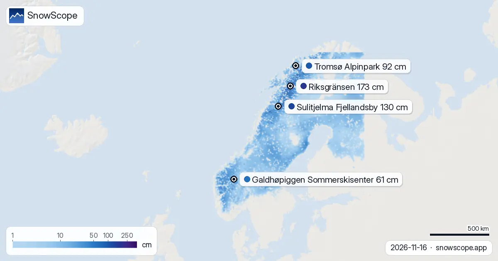

Wie viel Schnee liegt in Norwegen? Der Stand am 16. November 2026
Die weiße Fläche in Norwegen liegt heute bei etwa 246.310 km², ein Plus von 5.370 km² gegenüber gestern. Etwa 87 % der kartierten Berge und Hügel des Landes sind bedeckt.
Die Live-Schneeprognose für Riksgränsen in der SnowScope-AppSchneehöhen, Pulverschnee-Alarme und 3D-Karte, gratis.
Schneebedeckung heute
Selbst die tiefsten Lagen sind überwiegend weiß. Die 125.910 km² der Vorwoche sind um 120.400 km² gewachsen.
| Skigebiet | Schneehöhe | Neuschnee, 72 h | Erwartet, nächste Tage | Gipfel |
|---|---|---|---|---|
| Riksgränsen | 173 cm | 4 cm | 5 cm | 900 m |
| Sulitjelma Fjellandsby | 130 cm | 10 cm | 3 cm | 542 m |
| Tromsø Alpinpark | 92 cm | 8 cm | 4 cm | – |
| Galdhøpiggen Sommerskisenter | 61 cm | 19 cm | 1 cm | 2.180 m |
| Steilia | 58 cm | 3 cm | 2 cm | – |

Die letzten Schneefälle
In den letzten 72 Stunden fiel der meiste Neuschnee, bis zu 55 cm, über Jotunheimen und Hardangervidda.
Am letzten Tag kamen bis zu 11 cm hinzu.
Rund 133.130 km² bekamen mindestens 5 cm.
Wie tief, Höhenstufe für Höhenstufe
Die Höhe macht den Unterschied: zwischen 0 und 500 m im Schnitt 7 cm, 77 % bedeckt; zwischen 500 und 1.000 m im Schnitt 18 cm, 96 % bedeckt; zwischen 1.000 und 1.500 m im Schnitt 25 cm, 100 % bedeckt; zwischen 1.500 und 2.000 m im Schnitt 29 cm, 100 % bedeckt; zwischen 2.000 und 2.500 m im Schnitt 39 cm, 100 % bedeckt.
Skibedingungen
Neuschnee auf der Unterlage verspricht weiche Schwünge oben, unten bleibt es fleckig.
Die Vorhersage im Blick behalten: Der kommende Schnee kann das Bild schnell ändern.
Die besten Skigebiete im Moment
An der Spitze steht Riksgränsen mit 173 cm.
Knapp dahinter: Sulitjelma Fjellandsby (130 cm), Tromsø Alpinpark (92 cm), Galdhøpiggen Sommerskisenter (61 cm) und Steilia (58 cm).
In Riksgränsen: 4 cm Neuschnee in drei Tagen, bis Donnerstag, 19. November werden 5 cm mehr erwartet.
In Sulitjelma Fjellandsby: 10 cm Neuschnee in drei Tagen, bis Donnerstag, 19. November werden 3 cm mehr erwartet.
Auf 144 von 155 Skigebieten in Norwegen liegt oben Schnee.
Die nächsten Tage
Schnee ist angesagt: bis zu 11 cm in drei Tagen, bis zu 39 cm innerhalb von sieben Tagen.
Der schneereichste Tag dürfte der Freitag, 20. November werden, mit bis zu 16 cm an den schneereichsten Stellen.
Weiter voraus zeigen die Tage 8 bis 14 bis zu 35 cm an den schneereichsten Hängen.
Tipps für Skifahrer
- Früher Schnee ist über Steinen dünn: zuerst auf präparierten Pisten bleiben.
- Über der Waldgrenze kann der Schnee verfrachtet sein: Grate im Blick behalten.
- Neuschnee auf kalter Unterlage hält schlecht: an steilen Hängen vorsichtig sein.
Zu diesen Zahlen
Die Schneehöhen der Skigebiete sind der meiste Schnee in den oberen Hängen laut SnowScope-Schneemodell (etwa 1 km, Lauf vom 16. November); es sind Schätzungen für eine Fläche, keine Messung an einem Punkt. Werte von Messstationen sind Messungen am angegebenen Tag. Prognosen können sich ändern. Lies vor dem Freeriden immer den offiziellen Lawinenlagebericht.
Diesen Bericht zitieren
Für Forschung, Lehre oder Presse: Zahlen und Grafiken sind unter CC BY 4.0 mit dieser Quellenangabe frei nutzbar.
SnowScope (2026), Wie viel Schnee liegt in Norwegen? Der Stand am 16. November 2026, https://snowscope.app/blog/de/2026/11/norway-snow-report-16-november-2026.html, abgerufen am 2026-11-16
SnowScope (Atlas Labs). (2026, November 16). Wie viel Schnee liegt in Norwegen? Der Stand am 16. November 2026. SnowScope snow reports. https://snowscope.app/blog/de/2026/11/norway-snow-report-16-november-2026.html
BibTeX
@misc{snowscope2026norwaysnowreport16novemb,
author = {{SnowScope (Atlas Labs)}},
title = {Wie viel Schnee liegt in Norwegen? Der Stand am 16. November 2026},
year = {2026},
month = nov,
howpublished = {\url{https://snowscope.app/blog/de/2026/11/norway-snow-report-16-november-2026.html}},
note = {Published 2026-11-16 20:42 UTC; accessed 2026-11-16}
}· CC BY 4.0 · Methoden, Daten und Werkzeuge →
Riksgränsen: Schnee und Temperatur nach Höhe, dieser Winter vs letzter (Werkzeuge) →
Riksgränsen folgen
Gratis: eine Nachricht, wenn Neuschnee kommt, und jeden Morgen die Vorhersage.